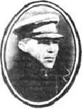

Савицький Олексій Васильович (літ. псевдонім Юхим Ґедзь, Олесь Ясний) народився 2 березня 1896 року в м.Золотоноші на Полтавщині (тепер Черкаської області) в сім'ї теслі. Закінчив земську школу, два курси Київського музичного інституту ім. М.В.Лисенка.
Працював земським писарем, після революції — службовцем у радянських установах, журналістом у редакціях газети "Комуніст" і журналу "Червоний перець"
До жодної з політичних партій не належав. Був членом літературної організації "Плуг". Статті, нариси, оповідання, гуморески, фейлетони друкував у газетах "Комуніст", "Селянська правда", "Пролетар", "Культура і побут", журналах "Плуг", "Плужанин", "Сільськогосподарський пролетар", "Сільський театр", "Всесвіт", "Знання", "Нова громада", "Червоний перець" та ін. Видав друком такі збірки оповідань і гуморесок; "Антон Троянденко", "Буває й таке" (1927), "Принципіально", "Троглодити", "Завзятий середняк" (1929), "Конкурс на гопак", "Ті ж і Мирон Гречка", "Столичний гість" (1930), "Перший іспит" (1931), "Тихою сапою" (1933). Співробітник Харківського обласного управління НКВС молодший лейтенант Замков, розглянувши матеріали, за якими Савицький О.В. ніби "був учасником контрреволюційної терористичної організації, яка ставила за мету боротися з радянською владою", вирішив, що перебування його на волі може вплинути на хід слідства. Вчинили на квартирі трус і заарештували господаря 2 листопада 1936 року. До травня 1937 року слідство велося в Харкові, потім Савицького етапували до спецкорпусу київської тюрми. На першому ж допиті, який вів слідчий Лисицький, письменник визнав себе винним. В обвинувальному висновку йому інкримінували "активну участь в українській контрреволюційній націоналістичній фашистській організації, зв'язаній з контрреволюційною троцькістсько-зінов'євською терористичною організацією, що вчинила 1 грудня 1934р. підле вбивство т.Кірова і готує чергові замахи на керівників ВКП(б) і Радянського уряду". На закритому засіданні 14 липня 1937 року Військова колегія Верховного Суду СРСР засудила Савицького-Гедзя О. В. до найвищої міри покарання — розстрілу з конфіскацією особистого майна. Вирок виконано 15 липня 1937 року в м.Києві. За протестом помічника Головного військового прокурора СРСР Військова колегія Верховного Суду СРСР на своєму засіданні 22 березня 1958 року розглянула матеріали справи і дійшла висновку: "Вирок Військової колегії Верховного Суду СРСР від 14 липня 1937р. щодо Савицького-Гедзя (він же Ясний) Олексія Васильовича за наново виявленими обставинами скасувати і справу припинити через відсутність складу злочину". Юхим Ґедзь реабілітований посмертно. Олександр Мукомела ЛУ 28 (4437) 11.07.1991